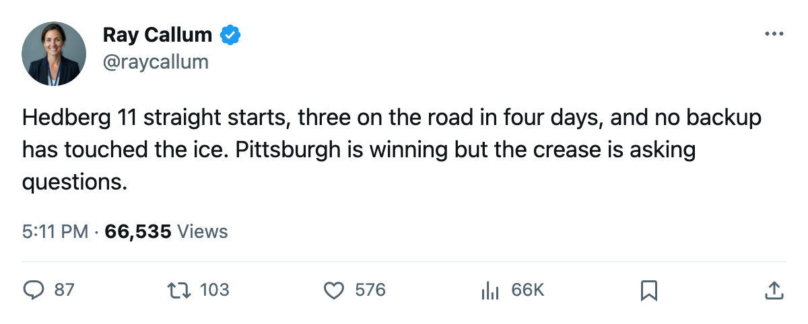
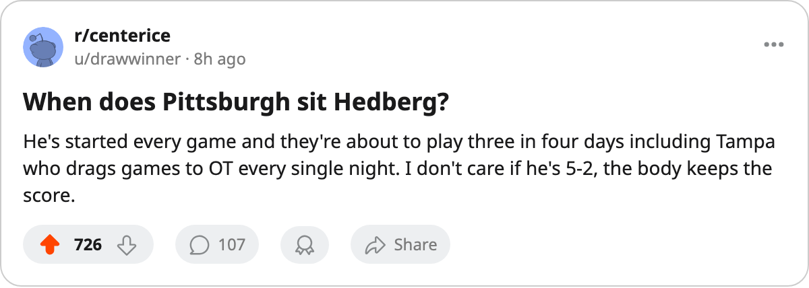

First Meeting: Pittsburgh Brings a 4-Game Streak to Florida, and a Goalie Who Has Not Rested Once
Johan Hedberg has started all 11 games. The Penguins open a 3-in-4 tonight, and their medical ledger is 116 days deep.
 Ray CallumSenior correspondent · Home Ice Network
Ray CallumSenior correspondent · Home Ice Network
 Pittsburgh Penguins visit
Pittsburgh Penguins visit  Florida Panthers tonight in the first meeting between these clubs this season. Pittsburgh Penguins are 5-2-0 with 18 points, 3rd in the Eastern Conference, riding a 4-game winning streak that includes 3 home wins and 1 road win. Florida Panthers are 4-6-1, 11 points, and just took a 1-0 lead into the third against
Florida Panthers tonight in the first meeting between these clubs this season. Pittsburgh Penguins are 5-2-0 with 18 points, 3rd in the Eastern Conference, riding a 4-game winning streak that includes 3 home wins and 1 road win. Florida Panthers are 4-6-1, 11 points, and just took a 1-0 lead into the third against  Atlanta Thrashers on Tuesday before losing.
Atlanta Thrashers on Tuesday before losing.
The storyline is  Johan Hedberg89. He has started 11 of 11. No backup has appeared in a single game. The other goaltenders at 100% workload are
Johan Hedberg89. He has started 11 of 11. No backup has appeared in a single game. The other goaltenders at 100% workload are  Nikolai Khabibulin92 of
Nikolai Khabibulin92 of  Tampa Bay Lightning (13 of 13) and
Tampa Bay Lightning (13 of 13) and  Roman Cechmanek86 of
Roman Cechmanek86 of  Los Angeles Kings (12 of 12). Pittsburgh Penguins have fewer games than either, which gives Hedberg the shortest runway.
Los Angeles Kings (12 of 12). Pittsburgh Penguins have fewer games than either, which gives Hedberg the shortest runway.
After tonight, Pittsburgh Penguins visit Tampa Bay Lightning on Tuesday and  Carolina Hurricanes on Wednesday. Three games in four days, all on the road, against teams that collectively have played 14 overtime games this season. Tampa Bay Lightning alone account for 5 overtime losses, the most in the league, which tells you they drag games deep.
Carolina Hurricanes on Wednesday. Three games in four days, all on the road, against teams that collectively have played 14 overtime games this season. Tampa Bay Lightning alone account for 5 overtime losses, the most in the league, which tells you they drag games deep.
Pittsburgh Penguins have filed 11 injury spells this season and lost 116 days, the second-worst total in the league. Rico Fata73 (abdomen, out until January 12) and  Brad Chartrand76 (ankle, out until November 23) are the current absences. The Penguins are winning anyway: 6-1 at home, 3-1 on the road.
Brad Chartrand76 (ankle, out until November 23) are the current absences. The Penguins are winning anyway: 6-1 at home, 3-1 on the road.
Florida Panthers lost Lukas Krajicek74 (abdomen, back December 9) and  Eric Messier72 (neck, back November 18) to new injuries this fortnight, joining
Eric Messier72 (neck, back November 18) to new injuries this fortnight, joining  Branislav Mezei73 (leg, back November 13). Their 3 injured men are 2 defensemen and a winger, which thins the bottom pairing heading into tonight.
Branislav Mezei73 (leg, back November 13). Their 3 injured men are 2 defensemen and a winger, which thins the bottom pairing heading into tonight.
 David Aebischer89 has started 10 of 12 for Florida. The Panthers are 3-2 at home and 2-5 on the road, and all 4 of their wins have come at home. Tonight matters for a club that needs to stop losing at home before the December logjam.
David Aebischer89 has started 10 of 12 for Florida. The Panthers are 3-2 at home and 2-5 on the road, and all 4 of their wins have come at home. Tonight matters for a club that needs to stop losing at home before the December logjam.

